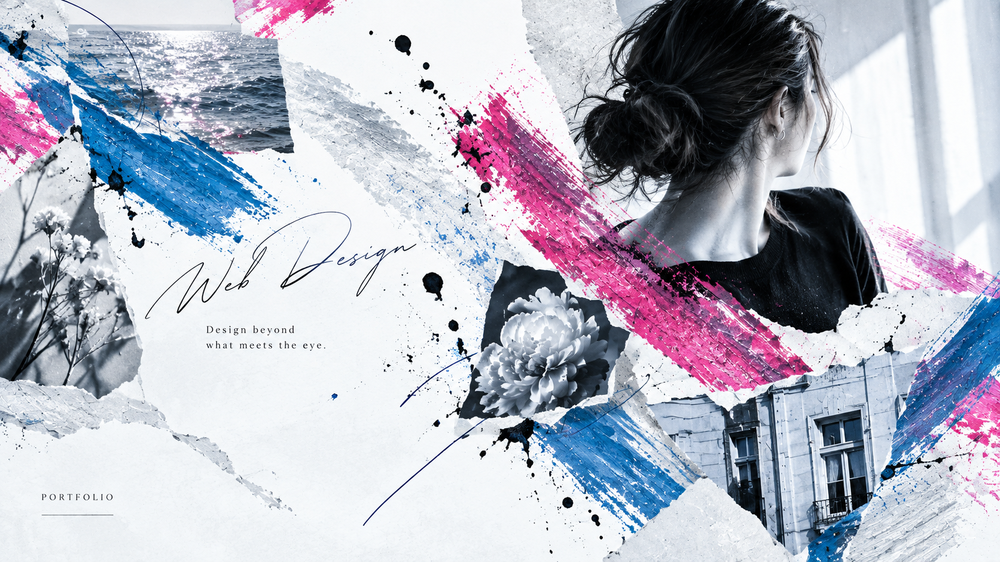
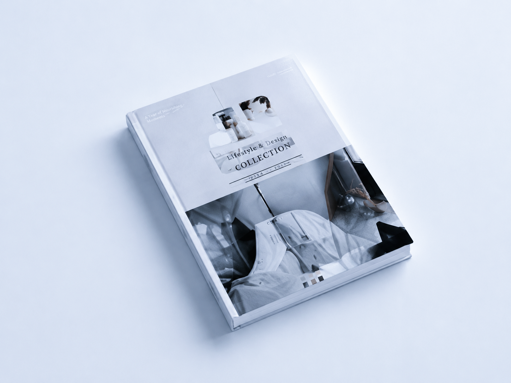
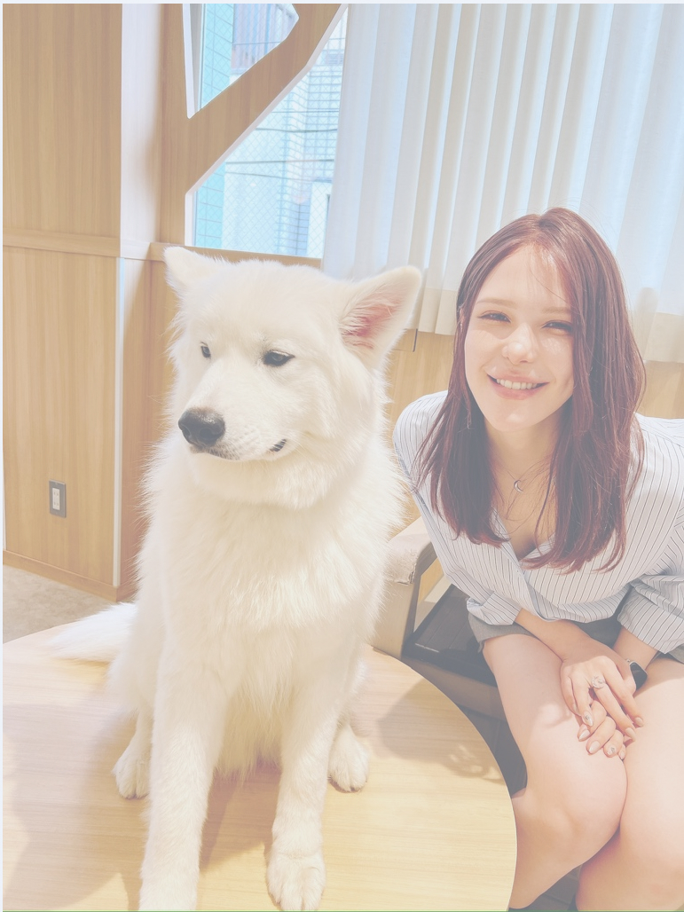
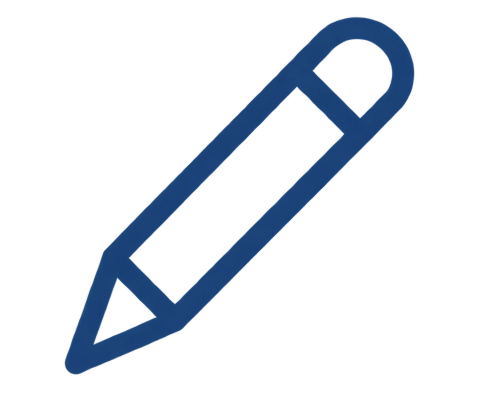

DESIGN
MV / バナー / LOGO / UI・UX / ワイヤーフレーム

WEB DESIGN 「伝えたい」を「伝わる」に。
MIND
MY DESIGN PHILOSOPHY
シンプルで洗練されたデザインをベースに、 色や写真、タイポグラフィ、余白の組み合わせから 生まれる世界観を大切にしています。 Webサイト制作では、企業やサービスの目的・想いを汲み取り、 キャッチコピーから細かなあしらいまで、 一貫したトーンで表現することを意識しています。 見た目の美しさだけでなく、そのブランドらしさが 自然と伝わるデザインを目指しています。

CAREER / PERSONALITY
PROFILE.
Webデザインを学んだのち、現在はWeb制作会社にて企業サイトの制作に携わっています。 サイト構成やコンテンツの企画、ライティング、デザインの方向性検討、CMSでの構築・公開など、幅広い工程を経験しています。 プライベートではファッションが好きで、色やシルエット、素材の組み合わせを考える時間が楽しみのひとつ。シンプルな中に少し個性を加えるような表現に惹かれます。 これからは、クライアントとの対話を大切にしながら、一つひとつのブランドに合ったWebサイトを丁寧につくっていきたいと考えています。

SKILLS
WHAT I CAN DO
MV / バナー / LOGO / UI・UX / ワイヤーフレーム

Figma / Photoshop / Illustrator /CMS
HTML / CSS / JavaScript / レスポンシブ対応
制作アシスタント / 進捗管理 / 修正対応 / 外注様対応
WORKS
SELECTED PROJECTS